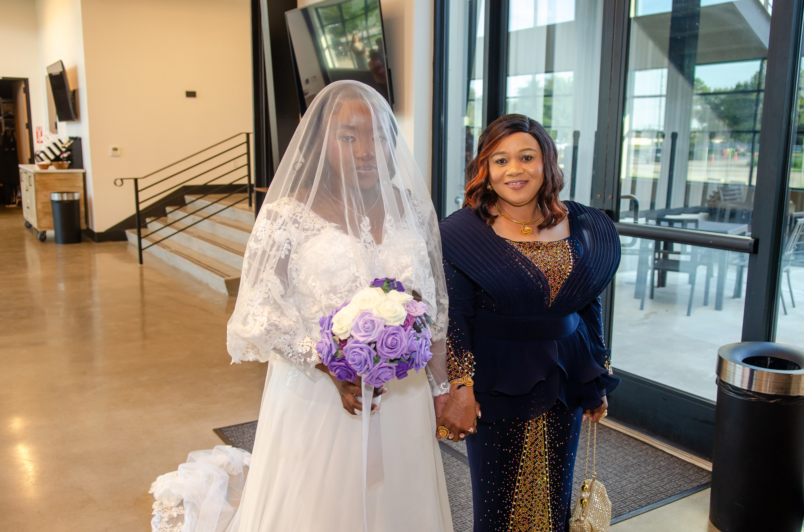
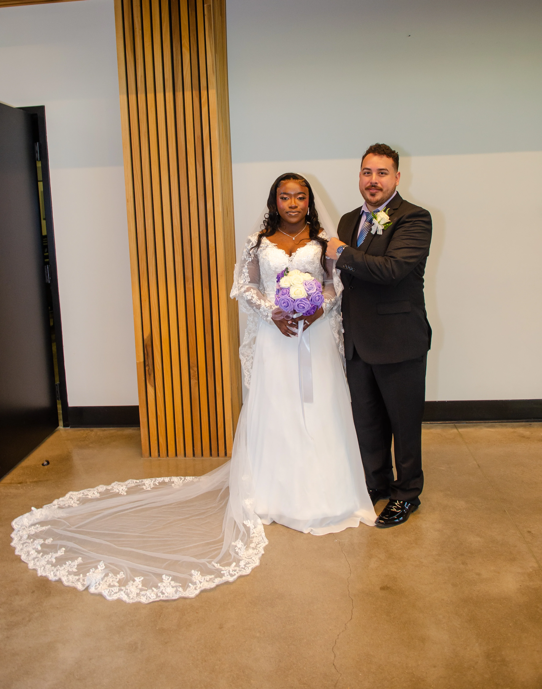

TBOY VISUALS PRESENTS — 001
A day.
01 / 27
A day.
A lifetime.
The beauty of two lives becoming
one story, told through photographs.
MORE THAN AN OCCASION.
MORE THAN A PHOTOGRAPH.
Some moments
deserve to live forever.
The quiet glances. The overwhelming joy. The people, the details, the beautiful chaos. A wedding is made of moments that cannot be repeated. My work is to preserve the feeling behind every one of them.

03 — THE PROMISE
The day passes.
TBOY VISUALS ©
The day passes.
The feeling stays.
Let's make something worth remembering.
MAKE AN ENQUIRY ↗